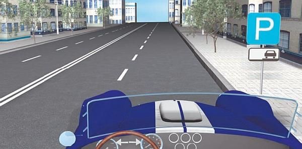
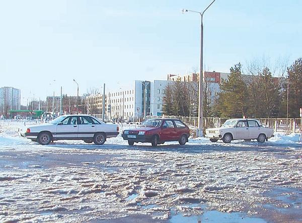
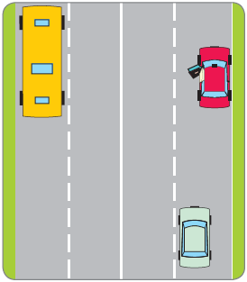

Как правильно парковаться в городских условиях/
Проблема парковки актуальна для любого более или менее крупного российского города. В центре припарковаться практически невозможно, во дворах спальных районов все места также заняты, у обочины проезжей части висят запрещающие знаки, и даже на платных стоянках свободных мест часто нет (рис. 3.11).
Рис. 3.11. Свободные места на городских парковках – большая редкость
Поэтому особую ценность для водителя представляет любой клочок земли, рядом с которым нет дорожных знаков, запрещающих остановку и стоянку, и на котором парковка не запрещена другими положениями Правил дорожного движения (рис. 3.12).

Рис. 3.12. Ставить автомобиль на стоянку нужно так, как предписывают дорожные знаки
В связи с этим особое значение приобретает умение водителя «втиснуться» на своей машине в самый минимальный промежуток. О том, как правильно парковаться в городских условиях, пойдет речь в данном разделе.
Парковка под углом: как заехать и как выехатьСущность угловой парковки заключается в том, что автомобили ставятся на стоянку под углом к краю проезжей части (бордюру, тротуару). Парковка под углом – и это ее главное достоинство – позволяет на относительно небольшом участке разместить большое количество автомобилей. Именно поэтому данный способ является одним из наиболее популярных вариантов парковки в крупных населенных пунктах.
Правда, угловая парковка имеет и свои трудности, которые обусловлены ограниченным обзором и недостаточным количеством места, заметно усложняющие осуществление данного маневра.
Двигаясь мимо ряда припаркованных под углом машин, выбирайте такое место для стоянки, где больше зона видимости. При этом будьте внимательны: любая из припаркованных машин может начать выезжать со стоянки и столкнуться с вашим автомобилем. Правда, виновным в совершении такого дорожно-транспортного происшествия будет признан водитель, выезжающий с места парковки и не пропустивший движущееся по проезжей части транспортное средство (то есть вашу машину), но вам ведь тоже не нужны лишние неприятности.
Если вы планируете поставить автомобиль под углом к краю проезжей части и движетесь на малой скорости, присматривая удобное место, делайте это с включенным указателем правого поворота – ваши намерения будут понятны и для водителей движущихся позади транспортных средств, и для водителей припаркованных машин. При этом следите за тем, чтобы боковое расстояние до стоящих автомобилей составляло не менее 1,5 метра. Выбрав место, притормозите и начинайте поворачивать рулевое колесо вправо в тот момент, когда лобовое стекло вашего автомобиля поравняется с левым задним углом припаркованной справа машины, рядом с которой вы хотите остановиться.
Затем продолжайте двигаться на малой скорости и заезжайте на выбранное место, выравнивания рулевым колесом управляемые колеса так, чтобы ваша машина находилась посередине между припаркованными автомобилями. Все время посматривайте на левое переднее и заднее правое крылья машины, так как всегда есть вероятность задеть этими частями кузова стоящие рядом автомобили.
Как только ваша машина передней частью заедет на выбранное для стоянки место, постарайтесь выровнять колеса и закончить маневр по прямой. Ваш автомобиль должен коснуться бордюра правым передним колесом. Заканчивать маневр следует на самой малой скорости, чтобы не вывести из строя колесо и подвеску при слишком сильном или резком столкновении с бордюрным камнем.
Остановившись, выключите указатель поворота, переведите рычаг переключения передач в нейтральное положение и затяните «ручник».
Выезжать с парковки гораздо сложнее. Правда, если по соседству с вами нет припаркованных машин, задача упрощается, поскольку зона видимости в данном случае заметно увеличивается. Если другая машина припаркована только с левой стороны – тоже неплохо, так как при выезде с парковки в первую очередь необходимо смотреть назад направо. Стоящий же слева автомобиль представляет опасность лишь с той точки зрения, что его можно задеть левым передним крылом собственной машины. Труднее всего выезжать со стоянки, если другие автомобили припаркованы с обеих сторон (особенно если справа стоит крупногабаритное транспортное средство).
Если в вашей машине имеются пассажиры, попросите одного из них о помощи. Пусть он выйдет из автомобиля, станет сбоку позади него и сигнализирует об изменении обстановки на дороге. Помните, что, перед тем как выехать, вы обязаны пропустить все движущиеся по проезжей части автомобили. Главная особенность – это то, что вам приходится выезжать на дорогу задним ходом при очень небольшой зоне видимости. Перед началом маневра посмотрите вокруг, внимательно оцените дорожную обстановку, а при осуществлении маневра будьте готовы в любой момент остановиться. Удостоверившись в отсутствии препятствий, включайте заднюю передачу и медленно выезжайте со стоянки. Постоянно следите за левым передним и правым задним крыльями своего автомобиля, так как ими легко задеть соответственно левую и правую машины. Когда задний бампер вашего автомобиля поравняется с задним бампером правой машины, остановитесь и еще раз оцените дорожную обстановку. При необходимости используйте для обзора окна припаркованной рядом машины.
Если помех нет, медленно продолжайте движение. Когда ваше заднее стекло поравняется с задним бампером правой машины, начинайте поворачивать руль вправо. При этом следите за передним левым крылом своей машины, чтобы не зацепить стоящий слева автомобиль.
Как только вы выехали с места стоянки и ваша машина полностью оказалась на полосе движения, выравнивайте колеса и начинайте движение.
Следуя этим несложным рекомендациям, вы легко будете выполнять такие непростые и необходимые в городе маневры, как заезд на угловую парковку и выезд с нее задним ходом.
Диагональная парковкаНа первый взгляд диагональная парковка в городских условиях может показаться несложным маневром, но в реальности все не так просто, как кажется поначалу. Даже умудренный опытом водитель может ошибиться при попытке припарковаться между двумя стоящими у края проезжей части машинами, что в конечном итоге вынуждает его искать новое место стоянки.
Кстати, парковаться можно как передним, так и задним ходом. Далее мы рассмотрим особенности, характерные для каждого варианта, о которых далеко не всегда рассказывают в автошколах.
Перед парковкой передним ходом проверьте, достаточно ли места между стоящими автомобилями, чтобы ваша машина поместилась без проблем. Расстояние между стоящими автомобилями должно быть в 2,5 раза больше вашей машины (иногда бывает достаточно двукратного превышения, но в таком случае водителю необходимо обладать немалым опытом и сноровкой).
Постоянно обращайте внимание на то, чтобы боковое расстояние между вашей машиной и стоящим у обочины автомобилем было не менее полуметра, иначе вы можете задеть его. Начинайте поворачивать к бордюру только тогда, когда передняя дверь вашего автомобиля поравняется с передним бампером машины, которая по окончании маневра должна оказаться позади вас. Учтите, что рулевым колесом в данном случае следует работать энергично, в противном случае вам не хватит места (помешает передний автомобиль). Парковаться нужно на минимальной скорости, потому что вы не будете успевать манипулировать рулем.
В результате правильно выполненного маневра машина должна стоять параллельно обочине. Отметим, что неправильно парковаться так, чтобы задняя часть машины торчала на проезжей части. Автомобиль, припаркованный таким образом, мешает движению других машин. Следует учитывать и то, что водителю машины, припаркованной за вами, будет трудно выехать с места стоянки из-за выступающей задней части вашего автомобиля.
Намного проще и удобнее парковаться задним ходом (рис. 3.13). Этот способ парковки позволяет «вписаться» в намного меньшее расстояние, что особенно актуально с учетом постоянного дефицита мест для стоянки в большинстве российских населенных пунктов.

Рис. 3.13. Парковка задом требует намного меньше места, чем парковка передом
Перед выполнением маневра убедитесь в отсутствии помех и поставьте свою машину параллельно переднему автомобилю, соблюдая боковую дистанцию, приблизительно равную полуметру. Затем на минимальной скорости начинайте движение назад, следя за перемещением точки безопасного поворота автомобиля.
ПРИМЕЧАНИЕ
В большинстве автошкол не рассказывают о таком важнейшем понятии, как точка безопасного поворота транспортного средства. Она определяется следующим образом: от глаз водителя проводится воображаемая прямая линия в направлении правого заднего колеса машины. Поскольку это колесо является для водителя невидимым, то место пересечения воображаемой линии с кузовом автомобиля и является точкой безопасного поворота.
Как только точка безопасного поворота поравнялась с левым задним углом стоящей машины, продолжая движение, энергично поворачивайте руль вправо до упора. При этом с помощью правого зеркала заднего вида наблюдайте за правым передним углом стоящего позади автомобиля. Как только он появился в зоне вашей видимости, начинайте выравнивать колеса. Затем продолжайте движение задним ходом до того момента, пока передний бампер вашей машины не поравняется с задним бампером переднего автомобиля. Как только это произошло, энергично поворачивайте руль влево до упора и продолжайте двигаться назад на минимальной скорости, приближая свою машину к заднему автомобилю (но не вплотную). Если вы подъехали слишком близко, подайте немного вперед, чтобы ваша машина не мешала начинать движение водителю стоящего позади автомобиля.
Выезд с диагональной парковки также имеет свои особенности, о которых далеко не всегда рассказывают в автошколах.
Вначале, оглянувшись и посмотрев в зеркала заднего вида, убедитесь в отсутствии помех слева позади вашей машины. После этого задним ходом медленно приблизьтесь к стоящему позади автомобилю, если расстояния до передней машины недостаточно для выполнения маневра. Затем включите левый «поворотник», еще раз оцените дорожную обстановку и, поворачивая руль влево, выезжайте с места парковки.
ПРИМЕЧАНИЕ
Не все знают, что при осуществлении большинства маневров руль следует поворачивать только во время движения. Манипулирование рулем на неподвижном транспортном средстве считается, как правило, ошибкой и, помимо прочего, ускоряет износ протектора и повышает нагрузку на рулевой механизм.
При правильном выезде с диагональной парковки автомобиль находится по отношению к проезжей части под углом примерно 45° (небольшое отклонение допускается). Если этот угол будет меньше, вы не сможете выехать, так как помешает передняя машина, а если больше – слишком сильно перегородите дорогу слева от вас, что будет мешать движению других транспортных средств.
Как только передние колеса вашего автомобиля поравняются с задним бампером стоящего впереди автомобиля, начинайте энергично поворачивать рулевое колесо вправо. При этом следите за правым передним крылом вашей машины, чтобы не зацепить передний автомобиль. Всегда нужно иметь в виду, что дверца впереди стоящего автомобиля в любой момент может открыться (рис. 3.14).

Рис. 3.14. Внезапно открывшаяся дверца может привести к ДТП
После этого еще раз оцените обстановку на дороге через зеркала заднего вида и, обязательно оглянувшись, спокойно выезжайте на проезжую часть.
Парковка задним ходом в городских условияхСпособ парковки, который мы рассмотрим ниже, во многом напоминает известное упражнение «Гараж», которое курсанты отрабатывают в автошколах. Однако в городских условиях парковка задним ходом между стоящими автомобилями имеет свои особенности и отличается от типичного заезда в гараж. Существует распространенное мнение, что совершенно ни к чему парковаться задним ходом, когда это можно сделать гораздо проще – передом. Ошибочность такого утверждения очевидна. Несмотря на то что заехать передним ходом действительно проще, последующий выезд с парковки становится намного сложнее. Почему? Да потому, что зона видимости у водителя будет сильно ограничена стоящими рядом автомобилями, а на проезжей части в это время может быть оживленное движение. В то время как после парковки задним ходом водитель, начиная движение, может полностью контролировать ситуацию на дороге.
Для примера предположим, что нужно припарковаться задним ходом между двумя автомобилями, стоящими слева от вашей машины. В данном случае эти автомобили припаркованы не параллельно краю проезжей части (как мы предполагали при рассмотрении диагональной парковки в предыдущем разделе), а перпендикулярно ей, но в то же время параллельно друг другу, причем расстояния между ними достаточно еще для одного автомобиля.
Поскольку вы будете парковаться влево, руль также нужно поворачивать влево, при этом перед машины будет смещаться в противоположном направлении, то есть вправо. Перед началом маневра оцените дорожную обстановку и удостоверьтесь в отсутствии помех, а также выясните, не будет ли ваш автомобиль являться помехой для других участников дорожного движения.
При выполнении данного маневра вам будет удобнее смотреть через левое плечо, периодически поглядывая в зеркала заднего вида.
Двигаясь задним ходом на минимальной скорости и поворачивая руль влево, приближайтесь к краю первой машины, по достижении его энергично выворачивайте руль влево до упора. Удерживайте руль в таком положении до тех пор, пока ваш автомобиль не станет параллельно машинам, между которыми вы паркуетесь. Здесь большое значение придается зеркалам заднего вида. Затем верните руль в исходное положение, выравнивая таким образом передние колеса. Помните, что делать это нужно не резко, но энергично, иначе ваша машина станет под углом по отношению к автомобилям, между которыми необходимо припарковаться.
Выровняв колеса, ненадолго остановитесь, чтобы убедиться в правильности ваших предыдущих действий. Посмотрите по очереди в каждое зеркало заднего вида, затем обернитесь назад и оцените положение машины и окружающую обстановку. Если вы заметили, что машина стоит немного не так,чуть-чуть подайте ее вперед и поставьте в требуемое положение. Не исключено, что на месте предполагаемой парковки вы обнаружите помеху (булыжник, яму), из-за которой придется изменить положение машины даже в том случае, когда с других точек зрения она стоит правильно.
Убедившись, что все в порядке, продолжайте выполнение маневра. Никогда не будет лишним остановиться еще раз: так вы сможете удостовериться в правильности направления движения, а также в том, что помех нет и вы сами не являетесь помехой. Двигаться следует на минимальной скорости, чтобы не удариться слишком сильно о бордюрный камень и не повредить тем самым подвеску или колеса автомобиля.
Завершив маневр, выключите передачу и поставьте машину на «ручник».
Что касается выезда, то он проще, чем при угловой или диагональной парковке. Подайте автомобиль немного вперед и, убедившись в отсутствии проезжающих мимо транспортных средств, спокойно выезжайте на проезжую часть. Поворачивая, внимательно следите за тем, чтобы не задеть припаркованные рядом автомобили.